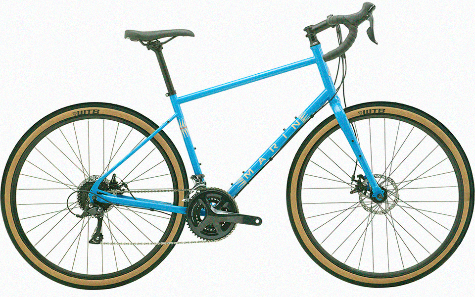

Велосипеди для бездоріжжя
Гірський велосипед
Цей тип велосипеда не потребує вступу. Очевидно, вони були створені для їзди поза дорогами. За призначенням цей тип можна розділити на велосипеди для даунхілу, фрірайду, ендуро, трейл, крос-кантрі. В окрему групу можна додати велосипеди для стріт, дьорт, слоуп-стайлу. Зазвичай вони оснащені 26/ 27,5/ 29 дюймовими колесами, широкими шинами з агресивним протектором та одним або двома амортизаторами. Переважно мають велику кількість передач, а завдяки своїй міцності та значній універсальності вони стали хорошим вибором також для їзди по місту.

Будь-який гірський велосипед ділиться ще на три категорії:
- Rigid — жорсткий велосипед без амортизаторів;
- Hardtail — велосипед обладнаний передньою амортизаційною вилкою;
- Двопідвіс — велосипед обладнаний передньою і задньою підвіскою.
Street/Trial
Trial — це виняткова спортивна дисципліна, де учасники намагаються пройти спеціально підготовлений шлях з перешкодами не торкаючись ногами, руками та іншими частинами тіла землі. Велосипеди, які використовуються в цьому виді спорту, зазвичай, або не мають сідла зовсім, або воно посаджене дуже низько на рамі.
Саме з цих байків виросли стрітові велосипеди, тобто велосипеди для подолання перешкод та виконання трюків в місті.
Dirt (дьорт)
Велосипеди, присвячені дьрт-джампінгу — стрибкам та трюкам на спеціально підготовленій трасі. Тут використовуються земляні насипні трампліни (радіуси), побудовані спеціально для цих велосипедів.
Характеристики велосипедів для Street і Dirt майже однакові, але є кілька моментів, які їх відрізняють один від одного. Ключові особливості рам для Dirt полягають у використанні довшої бази. Для дьорту характерні стрибки й вильоти з великої висоти, тому тут вже знадобиться амортизаційна вилка.
Велосипеди для доріг
Шосейний велосипед
Як випливає з назви, призначений він для їзди по асфальту. У велосипеда великі 28-дюймові колеса з вузькими (зазвичай 23-28 мм) і гладкими шинами.
Кермо дорожнього велосипеда характерно вигнуте, що дозволяє зайняти більш аеродинамічне положення (цей вигин називають «баранячими рогами»). Гальмування і перемикання передач відбуваються за допомогою спеціально розроблених під таке кермо важелів — дуалів, які дозволяють виконувати обидві ці функції не знімаючи руки з керма. Залежно від геометрії рами, типові шосейні велосипеди можна розділити на дві групи:
Класичний шосейник — розроблений для перегонів, має досить коротку колісну базу та низьку агресивну посадку що дозволяє з відносним комфортом та великою швидкістю долати регламентовану змаганнями дистанцію.
Ендюранс — дозволяють більш комфортно розташуватися і зручніше долати великі відстані, на відміну від спортивних шосейних байків забезпечують прямішу посадку та мають не таку жорстку раму, що дозволяє їздити не тільки по європейському асфальту, а й по нашому 🙂
Gravel / Турінг (трекінговий, туристичний велосипед)
Останнім часом ці велосипеди стали чи не найпопулярнішими. Якщо коротко — це комфортабельний дорожній велосипед з ширшими шинами та вигнутим кермом, яке стало трохи ширше та ергономічніше для полегшення їзди по бездоріжжю.
Вони часто дають можливість встановити болотники та деякі аксесуари. Ніщо не перешкоджає встановити шосейні шини на такий велосипед і їздити на ньому по асфальту майже як на повноцінному шосейному велосипеді.
І, хоч це помітно й неозброєним оком, але особливо хочеться виділити зовнішній вигляд цих велосипедів 🙂
Кросовий велосипед
Простіше кажучи, крос-велосипеди (або гібридні) — це повсякденні велосипеди. Як правило, вони трохи дешевші та легші.
Як і трекінг, кроси — це велосипеди для універсальної туристично-міської їзди. Їх часто вибирають для першого велосипеда, особливо коли невідомо, яким саме шляхом піде ваша велосипедна пристрасть.
Варто пам’ятати, що вони не є велосипедами для їзди по складніших місцевостях, для цього використовують гірські велосипеди з більшим ходом амортизатора та ширшими шинами. Втім, про це мова йшла вище.